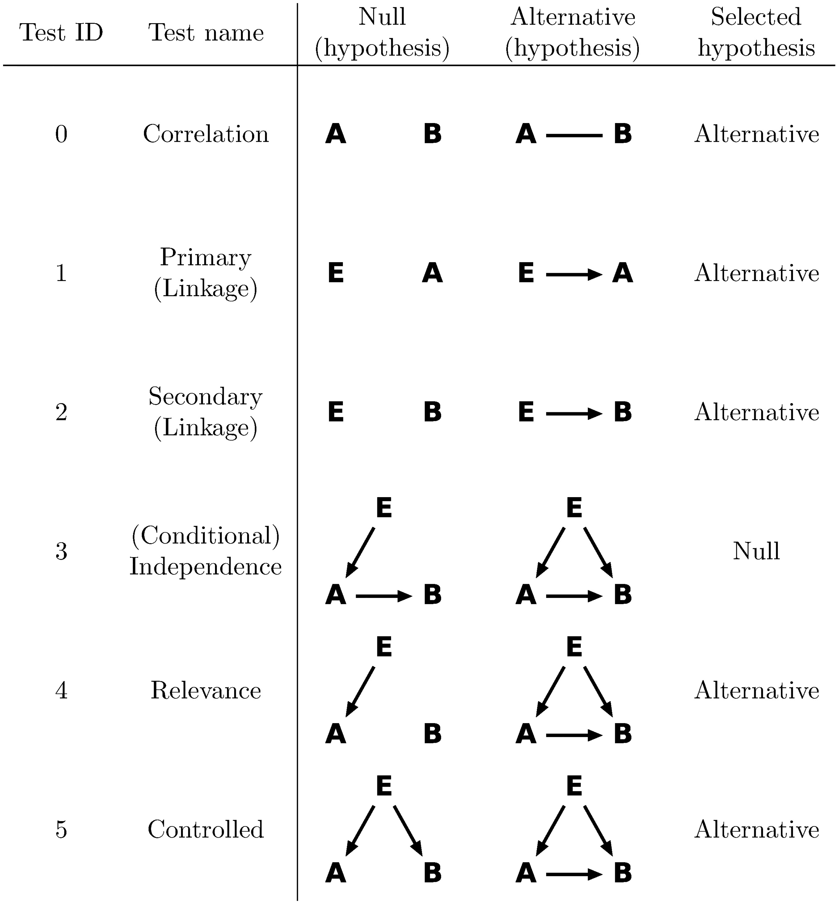

Likelihood ratio tests
Consider correlated genes $A$, $B$, and a third variable $E$ upstream of $A$ and $B$, such as a significant eQTL of $A$. The eQTLs can be obtained either de novo using eQTL identification tools such as matrix-eQTL [Shabalin2012] or kruX [Qi2014], or from published analyses. Throughout this documentation, we assume that $E$ is a significant eQTL of $A$, whereas extension to other data types is straightforward. We use $A_i$ and $B_i$ for the expression levels of gene $A$ and $B$ respectively, which are assumed to have gone through the supernormalization, and optionally the genotypes of the best eQTL of $A$ as $E_i$, where $i=1,\dots,n$ across samples. Genotypes are assumed to have a total of $n_a$ categories, so $E_i\in\{0,\dots,n_a\}$. We define the null and alternative hypotheses for a total of six tests, as shown in the table below.

Copyright 2017 Wang, Michoel. DOI:10.1371/journal.pcbi.1005703.g001. Reused under the terms of the Creative Commons Attribution License
LLRs of every test are calculated separately as follows:
Correlation test
Define the null hypothesis as $A$ and $B$ are independent, and the alternative hypothesis as they are correlated:
\[{\mathcal H}_{\mathrm{null}}^{\mathrm{(0)}}=A\qquad B,\hspace{4em}{\mathcal H}_{\mathrm{alt}}^{\mathrm{(0)}}=A - B.\]
The superscript $(0)$ is the numbering of the test. Both hypotheses are modeled with gene expression levels following bivariate normal distributions, as
\[\begin{pmatrix} A_i\\\\ B_i \end{pmatrix} \sim N\left( \begin{pmatrix} 0\\\\ 0 \end{pmatrix}, \begin{pmatrix} \sigma_{A0}^2 & \rho\,\sigma_{A0}\sigma_{B0}\\\\ \rho\,\sigma_{A0}\sigma_{B0} & \sigma_{B0}^2 \end{pmatrix} \right)\]
for $i=1,\dots,n$. The null hypothesis corresponds to $\rho=0$.
Maximum likelihood estimators (MLE) for the model parameters $\rho$, $\sigma_{A0}$, and $\sigma_{B0}$ are
\[\hat{\rho}=\frac{1}{n}\sum_{i=1}^n A_i B_i,\qquad\hat{\sigma}_{A0}=\hat{\sigma}_{B0}=1,\]
and the LLR is simply
\[\mathrm{LLR}^{\mathrm{(0)}}=-\frac{n}{2}\log(1-\hat{\rho}^2).\]
In the absence of genotype information, we use nonzero correlation between $A$ and $B$ as the indicator for $A\rightarrow B$ regulation, giving the posterior probability
\[P(A - B)=P(\mathcal{H}_{\mathrm{alt}}^{\mathrm{(0)}} \mid \mathrm{LLR}^{\mathrm{(0)}}).\]
The LLR for the correlation test of a specific gene $A$ against all other genes $B$ is implemented as a method of the realLLR_col function:
BioFindr.realLLR_col — MethodrealLLR_col(Y::Matrix{T},Ycol::Vector{T}) where T<:AbstractFloatCompute the log-likelihood ratios for BioFindr test 0 (correlation test) for a given column vector Ycol against all columns of matrix Y.
Y and Ycol are assumed to have undergone supernormalization with each column having mean zero and variance one. The LLRs are scaled by the number of rows (samples).
See also supernormalize.
Primary linkage test
Verify that $E$ regulates $A$ from ${\mathcal H}_{\mathrm{alt}}^{\mathrm{(1)}}\equiv E\rightarrow A$ and ${\mathcal H}_{\mathrm{null}}^{\mathrm{(1)}}\equiv E\qquad A$. For ${\mathcal H}_{\mathrm{alt}}^{\mathrm{(1)}}$, we model $E\rightarrow A$ as $A$ follows a normal distribution whose mean is determined by $E$ categorically, i.e.
\[A_i\mid E_i\sim N(\mu_{E_i},\sigma_A^2).\]
From the total likelihood $p(A\mid E)=\prod_{i=1}^np(A_i\mid E_i)$, we find MLEs for model parameters $\mu_j,j=0,1,\dots,n_a$ and $\sigma_A$, as
\[\hat{\mu}_j=\frac{1}{n_j}\sum_{i=1}^n A_i \delta_{E_i j},\quad \hat{\sigma}_A^2=1-\sum_{j=0}^{n_a}\frac{n_j}{n} \hat{\mu}_j^2,\]
where $n_j$ is the sample count by genotype category,
\[n_j \equiv \sum_{i=1}^n \delta_{E_i j}.\]
The Kronecker delta function is defined as $\delta_{xy}=1$ for $x=y$, and 0 otherwise. When summing over all genotype values ($j=0,\dots,n_a$), we only pick those that exist ($n_j>0$) throughout this article. Since the null hypothesis is simply that $A_i$ is sampled from a genotype-independent normal distribution, with MLEs of mean zero and standard deviation one due to the supernormalization (see General inference algorithm), the LLR for test 1 becomes
\[\mathrm{LLR}^{\mathrm{(1)}}=-\frac{n}{2}\ln\hat{\sigma}_A^2.\]
By favoring a large $\mathrm{LLR}^{\mathrm{(1)}}$, we select ${\mathcal H}_{\mathrm{alt}}^{\mathrm{(1)}}$ and verify that $E$ regulates $A$, with
\[P(E\rightarrow A)=P({\mathcal H}_{\mathrm{alt}}^{\mathrm{(1)}}\mid\mathrm{LLR}^{\mathrm{(1)}}).\]
The LLR for the primary linkage test can be obtained by selecting the appropriate element from the results of the secondary linkage test.
Secondary linkage test
The secondary test is identical with the primary test, except it verifies that $E$ regulates $B$. Hence repeat the primary test on $E$ and $B$ and obtain the MLEs:
\[\hat{\nu}_j=\frac{1}{n_j}\sum_{i=1}^n B_i \delta_{E_i j},\quad \hat{\sigma}_B^2=1-\sum_{j=0}^{n_a}\frac{n_j}{n}\hat{\nu}_j^2,\]
and the LLR as
\[\mathrm{LLR}^{\mathrm{(2)}}=-\frac{n}{2}\ln\hat{\sigma}_B^2.\]
${\mathcal H}_{\mathrm{alt}}^{\mathrm{(2)}}$ is chosen to verify that $E$ regulates $B$.
In Association analysis, the linkage test is used standalone, and then its LLR for testing a specific grouping vector $E$ against all genes $B$ is implemented as a method of the realLLR_col function:
BioFindr.realLLR_col — MethodrealLLR_col(Y::Array{T},E::Vector{S}) where {T<:AbstractFloat, S<:Integer}Compute the log-likelihood ratios for BioFindr test 2 (Linkage test) for a given categorical vector E against all columns of matrix Y.
Y is assumed to have undergone supernormalization with each column having mean zero and variance one. The LLRs are scaled by the number of rows (samples).
See also supernormalize, llrstats_col.
In Causal inference, the LLR for the linkage test is computed together with the other tests for efficiency (see below).
Conditional independence test
Verify that $E$ and $B$ are independent when conditioning on $A$. This can be achieved by comparing
\[{\mathcal H}_{\mathrm{alt}}^{\mathrm{(3)}}\equiv B\leftarrow E\rightarrow A\wedge(A\mathrm{\ correlates\ with\ }B)\]
against
\[{\mathcal H}_{\mathrm{null}}^{\mathrm{(3)}}\equiv E\rightarrow A\rightarrow B.\]
LLRs close to zero then prefer ${\mathcal H}_{\mathrm{null}}^{\mathrm{(3)}}$, and ensure that $E$ regulates $B$ only through $A$:
\[P(E\perp B\mid A)=P({\mathcal H}_{\mathrm{null}}^{\mathrm{(3)}}\mid\mathrm{LLR}^{\mathrm{(3)}}).\]
For ${\mathcal H}_{\mathrm{alt}}^{\mathrm{(3)}}$, the bivariate normal distribution dependent on $E$ can be represented as
\[\begin{pmatrix} A_i\\\\ B_i \end{pmatrix} \mid E_i \sim N\left( \begin{pmatrix} \mu_{E_i}\\\\ \nu_{E_i} \end{pmatrix}, \begin{pmatrix} \sigma_A^2 & \rho\sigma_A\sigma_B \\\\ \rho\sigma_A\sigma_B & \sigma_B^2 \end{pmatrix} \right).\]
For ${\mathcal H}_{\mathrm{null}}^{\mathrm{(3)}}$, the distributions follow $A_i\mid E_i$ as in the Primary linkage test, as well as
\[B_i\mid A_i\sim N(\rho A_i,\sigma_B^2).\]
Substituting parameters $\mu_j,\nu_j,\sigma_A,\sigma_B,\rho$ of ${\mathcal H}_{\mathrm{alt}}^{\mathrm{(3)}}$ and $\mu_j,\rho,\sigma_A,\sigma_B$ of ${\mathcal H}_{\mathrm{null}}^{\mathrm{(3)}}$ with their MLEs, we obtain the LLR:
\[\mathrm{LLR}^{\mathrm{(3)}} =-\frac{n}{2}\ln\left(\hat{\sigma}_A^2\hat{\sigma}_B^2-(\hat{\rho}+\sigma_{AB}-1)^2\right) + \frac{n}{2}\ln\hat{\sigma}_A^2 + \frac{n}{2}\ln(1-\hat{\rho}^2),\]
where
\[\sigma_{AB} \equiv 1-\sum_{j=0}^{n_a}\frac{n_j}{n}\hat{\mu}_j\hat{\nu}_j,\]
and $\hat\rho=\frac{1}{n}\sum_{i=1}^n A_iB_i$ is the same as in the Correlation test.
Relevance test
Since the indirect regulation $E\rightarrow B$ tends to be weaker than any of its direct regulation components ($E\rightarrow A$ or $A\rightarrow B$), we propose to test $E\rightarrow A\rightarrow B$ with indirect regulation $E\rightarrow B$ as well as the direct regulation $A\rightarrow B$ for stronger distinguishing power on weak regulations. We define
\[{\mathcal H}_{\mathrm{alt}}^{\mathrm{(4)}}\equiv E\rightarrow A\wedge E\rightarrow B\leftarrow A\]
and
\[{\mathcal H}_{\mathrm{null}}^{\mathrm{(4)}}\equiv E\rightarrow A\qquad B\]
This simply verifies that $B$ is not independent from both $A$ and $E$ simultaneously. In the alternative hypothesis, $B$ is regulated by $E$ and $A$, which is modeled as a normal distribution whose mean is additively determined by $E$ categorically and $A$ linearly, i.e.
\[B_i\mid E_i,A_i\sim N(\nu_{E_i}+\rho A_i,\sigma_B^2).\]
We can hence solve its LLR as
\[\mathrm{LLR}^{\mathrm{(4)}}=-\frac{n}{2}\ln\left(\hat{\sigma}_A^2\hat{\sigma}_B^2-(\hat{\rho}+\sigma_{AB}-1)^2\right)+\frac{n}{2}\ln\hat{\sigma}_A^2,\]
with all MLEs as defined before.
Controlled or pleiotropy test
Based on the positives of the secondary test, we can further distinguish the alternative hypothesis
\[{\mathcal H}_{\mathrm{alt}}^{\mathrm{(5)}}\equiv B\leftarrow E\rightarrow A\wedge A\rightarrow B\]
from the null
\[{\mathcal H}_{\mathrm{null}}^{\mathrm{(5)}}\equiv B\leftarrow E\rightarrow A\]
to verify that $E$ does not regulate $A$ and $B$ independently. Its LLR can be solved as
\[\mathrm{LLR}^{\mathrm{(5)}}=-\frac{n}{2}\ln\left(\hat{\sigma}_A^2\hat{\sigma}_B^2-(\hat{\rho}+\sigma_{AB}-1)^2\right)+\frac{n}{2}\ln\hat{\sigma}_A^2\hat\sigma_B^2.\]
with all MLEs as defined before. Note that this test was called the controlled test in the original paper (see figure above), but we now prefer to refer to it as the pleiotropy test.
Implementation
The LLRs for the secondary linkage, conditional independence, relevance, and pleiotrropy tests of a specific gene $A$ against all other genes $B$ can all be computed from the same sufficient statistics $\hat{\rho}, \hat{\sigma}_A^2, \hat{\sigma}_B^2, \sigma_{AB}$. Moreover note the relations
\[\begin{aligned} \mathrm{LLR}^{\mathrm{(3)}} &= \mathrm{LLR}^{\mathrm{(4)}} + \frac{n}{2}\ln (1-\hat{\rho}^2)\\ \mathrm{LLR}^{\mathrm{(5)}} &= \mathrm{LLR}^{\mathrm{(4)}} + \frac{n}{2}\ln \hat{\sigma}_B^2 = \mathrm{LLR}^{\mathrm{(4)}} - \mathrm{LLR}^{\mathrm{(2)}} \end{aligned}\]
Hence for efficiency these LLRs are computed jointly by a method of the realLLR_col function:
BioFindr.realLLR_col — MethodrealLLR_col(Y::Matrix{T},Ycol::Vector{T},E::Vector{S}) where {T<:AbstractFloat, S<:Integer}Compute the log-likelihood ratios for the BioFindr causal tests for a given column vector Ycol with categorical instrument E against all columns of matrix Y :
- Test 2 (Linkage test)
- Test 3 (Mediation test)
- Test 4 (Relevance test)
- Test 5 (Pleiotropy test)
Y and Ycol are assumed to have undergone supernormalization with each column having mean zero and variance one. The LLRs are scaled by the number of rows (samples).
See also supernormalize, llrstats_col.
The MLEs of the various model parameters are computed in the llrstats_col and groupmeans functions:
BioFindr.llrstats_col — Functionllrstats_col(Y,Ycol,E)Compute the sufficient statistics for the log-likelihood ratios for BioFindr tests 2-5 for a given column vector Ycol with categorical instrument E against all columns of Y.
Ycol and Y are assumed to have undergone supernormalization with each col having mean zero and variance one. The LLRs are scaled by the number of rows (samples).
The sufficient statistics are:
- the covariance $\hat{\rho}$ between
Ycoland all columns ofY, returned in the first output argument, - the weighted average variances $\hat{\sigma}_B^2$ of each column of matrix
Yover the groups (unique values) inE, returned as the first column of the second output argument, - the weighted average covariances $\sigma_{AB}$ between
Ycoland all columns ofYover the groups (unique values) ofE, returned as the second column of the second output argument, - the weighted average variance $\hat{\sigma}_A^2$ of
Ycolover the groups (unique values) inE, returned as the third output argument.
See also groupmeans.
llrstats_col(Y,E)Compute the sufficient statistics for the log-likelihood ratios for BioFindr tests 2 for a given categorical vector E against all columns of Y.
Y is assumed to have undergone supernormalization with each col having mean zero and variance one. The LLRs are scaled by the number of rows (samples).
The sufficient statistics are the weighted average variances $\hat{\sigma}_B^2$ of each column of matrix Y over the groups (unique values) in E.
See also groupmeans.
BioFindr.groupmeans — Functiongroupmeans(Y,Ycol,E)Compute the size $n_j$ for each of the groups (unique values) in categorical vector E (first output argument), and the means $\hat{\nu_j}$ of each column of matrix Y (second output argument) and $\hat{\mu_j}$ of Ycol (third output argument) for each of the groups in E.
groupmeans(Y,E)Compute the size $n_j$ for each of the groups (unique values) in categorical vector E (first output argument), and the means $\hat{\nu_j}$ of each column of matrix Y (second output argument) for each of the groups in E.
A summary of all methods of the realLLR_col function:
BioFindr.realLLR_col — FunctionrealLLR_col(Y::Matrix{T},Ycol::Vector{T}) where T<:AbstractFloatCompute the log-likelihood ratios for BioFindr test 0 (correlation test) for a given column vector Ycol against all columns of matrix Y.
Y and Ycol are assumed to have undergone supernormalization with each column having mean zero and variance one. The LLRs are scaled by the number of rows (samples).
See also supernormalize.
realLLR_col(Y::Matrix{T},Ycol::Vector{T},E::Vector{S}) where {T<:AbstractFloat, S<:Integer}Compute the log-likelihood ratios for the BioFindr causal tests for a given column vector Ycol with categorical instrument E against all columns of matrix Y :
- Test 2 (Linkage test)
- Test 3 (Mediation test)
- Test 4 (Relevance test)
- Test 5 (Pleiotropy test)
Y and Ycol are assumed to have undergone supernormalization with each column having mean zero and variance one. The LLRs are scaled by the number of rows (samples).
See also supernormalize, llrstats_col.
realLLR_col(Y::Array{T},E::Vector{S}) where {T<:AbstractFloat, S<:Integer}Compute the log-likelihood ratios for BioFindr test 2 (Linkage test) for a given categorical vector E against all columns of matrix Y.
Y is assumed to have undergone supernormalization with each column having mean zero and variance one. The LLRs are scaled by the number of rows (samples).
See also supernormalize, llrstats_col.
- Shabalin2012Shabalin AA. Matrix eQTL: ultra fast eQTL analysis via large matrix operations, Bioinformatics, Volume 28, Issue 10, May 2012, Pages 1353–1358,
- Qi2014Qi J, Foroughi Asl H, Bjorkegren J, Michoel T. kruX: matrix-based non-parametric eQTL discovery. BMC Bioinformatics 15, 11 (2014).